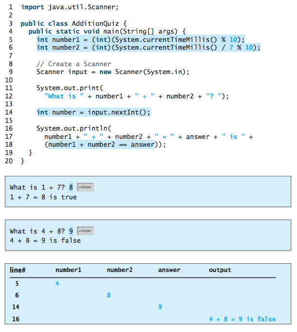
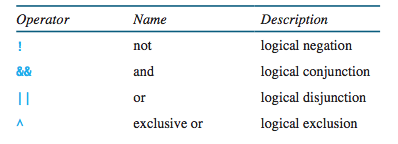
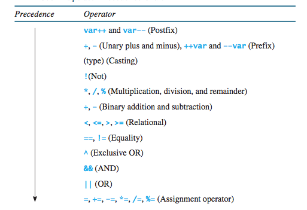

CS201: Introduction to Programming
Lecture 03
Reading assignment: chapter 3
Lesson Objectives
- To declare boolean variables and write Boolean expressions using relational operators
- To implement selection control using one-way if statements
- To implement selection control using two-way if-else statements
- To implement selection control using nested if and multi-way if statements
- To generate random numbers using the Math.random() method
- To combine conditions using logical operators (!, &&, ||, and ^)
- To implement selection control using switch statements
- To write expressions using the conditional expression
- To examine the rules governing operator precedence and associativity
- To apply common techniques to debug errors
Decision Making
We need to make a decision with our program. If decision amounts to one of two values: true or false.
if ( ... ) {
}
Evaluation of complex operations can always be reduced down to one of two states. Furthermore, we can "embed" operations into a single clause and evaluate their result. 
if-else
if-else allows for us to make more complex decisions:
if ( ... ) {
} else {
}
Yet even more complex:
if ( ... ) {
} else if ( ...) {
} else {
}
Please be careful in how you nest your if-else conditions. Things can get out of hand rather quickly and, sadly, at times this can lead to unreadable code; even worse, introduce logic errors!
Random number generator
To generate a random number in Java, it's simple:
int v = (int)(Math.random() * 6);
What is the value of v?
Logic Operators
Logical operators are mathematically-based boolean operations that evalue logc and yield a single truth value. This truth value can either be true or false.
order of operations
switch statements
switch statements are useful for complex (cumbersome) if-else sitautions.
switch( v ) {
case 0:
/* actions */
break;
case 1:
/* actions */
break;
default:
/* all else ... */
}
Lab Exercises
For each of the following exercises, practice developing and running your program with Eclispe. Note that the lab assignments are not graded.
- Write a program that generates 4 random numbers between 1 and 10, displays numbers and their average.
- Write a program that ask a user for his/her age. Based on the age, displays the stage of life: infant, toddler, kid, teenage, adult or senior citizen.
- Write a progam that prints out the y-intercept and the slope for this function: 2x - 2y = 10.
- Write a program that inputs the cost of an item (double-precision) and prints the same number as a fraction